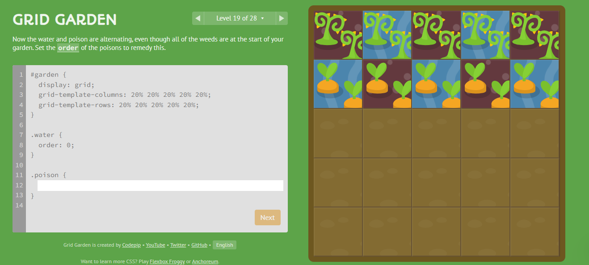
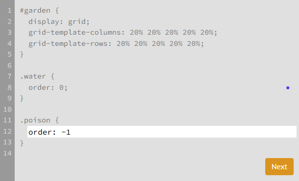
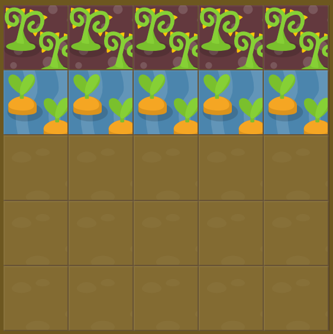

O Grid Garden é um jogo online e gratuito criado
por Thomas Park para ensinar o funcionamento do CSS Grid de
forma divertida e interativa.
"Meu objetivo com o Grid Garden não é abordar todos os aspectos do CSS Grid, mas sim ajudar os jogadores a desenvolverem uma intuição e a reconhecerem o seu potencial."
(Thomas Park, 2017)

O nível 19 de Grid Garden requer que o jogador utilize a propriedade order para
fazer com que as cenouras fiquem na água e o veneno mate as outras plantas.
solução

Para entender a solução, devemos analisar linha por linha:
.water{order: 0; } → Aqui o jogo só deixa mais claro o que o CSS já define por
padrão. A ordem dos elementos é automaticamente 0 quando não estão definidos no código. Assim, a classe
water foi definida para ter ordem zero..poison{order: -1;} → Quando a classe poison é definida para -1, neste caso,
significa que todos os elementos dessa classe serão posicionados antes de todos os elementos da classe
water.Utilizando esse código, a solução do nível é a seguinte:
